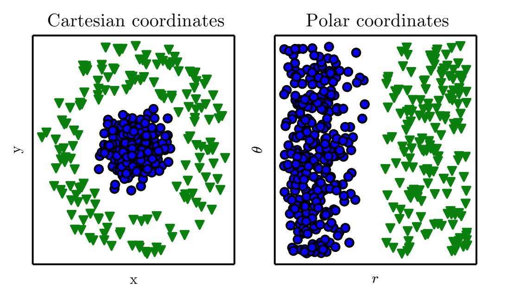
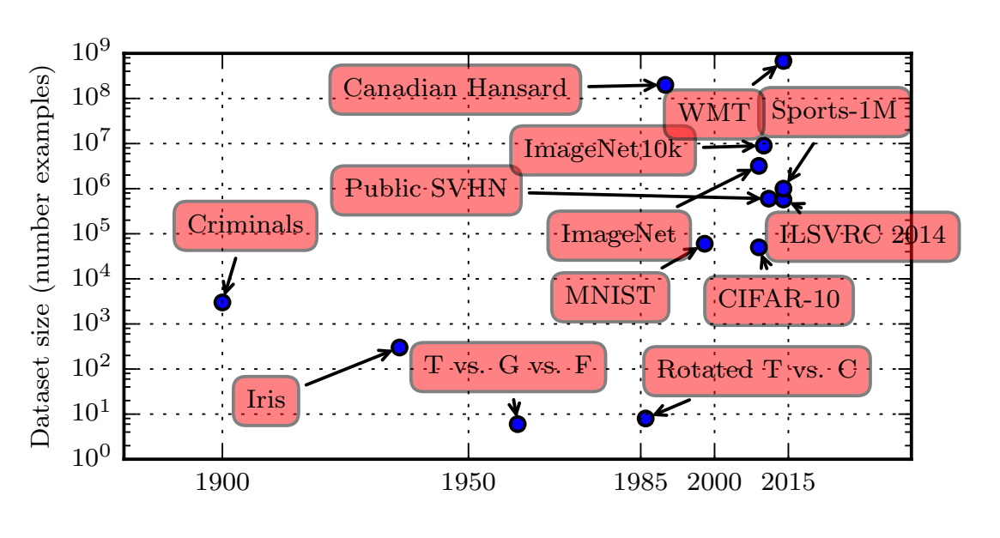
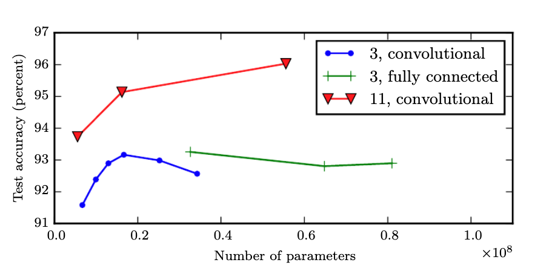
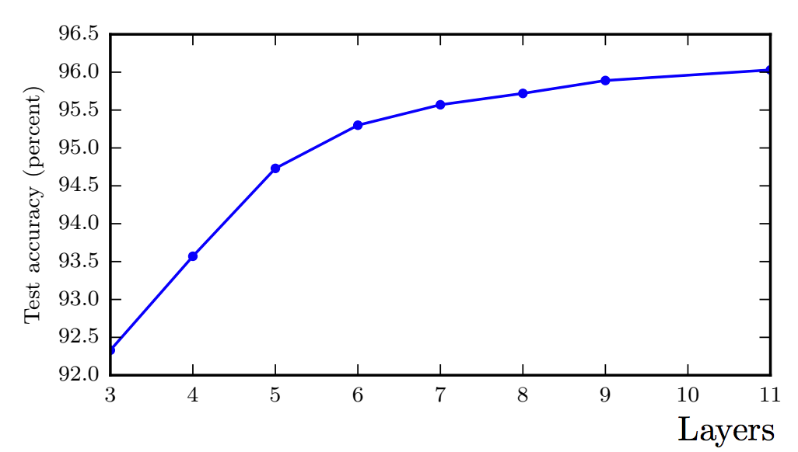
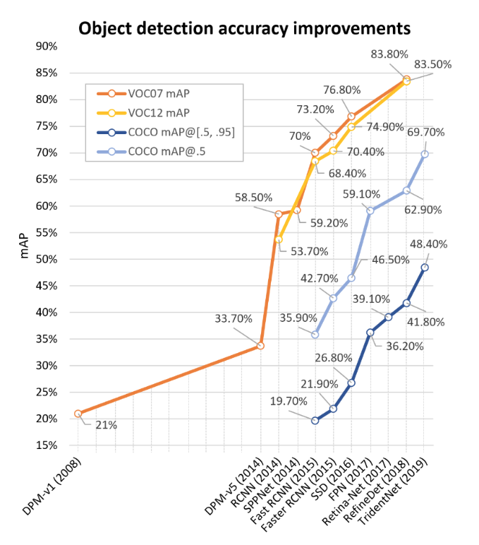

Introduction to Deep Learning
Contents
Introduction to Deep Learning¶
Deep Neural Networks (DNNs)¶
There are two main benefits that Deep Neural Networks (DNNs) brought to the table, on top of their superior performance in large datasets that we will see later.
Automated Feature Construction (Representations)¶
Almost all machine learning algorithms depend heavily on the representation of the data they are given. Each piece of, relevant to the problem, information that is included in the representation is known as a feature. Given a synthetic dataset like the one shown below on the left, there is a thought process that a data scientist must undergo to transform the input into a suitable representation e.g. \((x,y)=(r\cos\theta,r\sin\theta)\) for a linear classifier to be able to provide a solution.
 Coordinate transformation to allow classification using a discrimination line
The DNN (even as small as a few neurons) will learn the most suitable representations for the task at hand (still with a some help from experts).
Hierarchical representations¶
On top of the automated feature construction advantage, that even shallow networks can provide, features can be represented hierarchically as shown below.
 Hierarchical feature learning inside a DNN for a classification
Hierarchical feature learning inside a DNN for a classification
Impact of data set size and active learning¶
Deep Learning is benefiting from big data as the last 5 years trend shown below.
 Dataset size over time
However big data has lead to several side effects and tradeoffs cite. The success of DNNs with big data hides well documented failures to e.g. perceive infrequent corner cases that are all too important in mission critical industries.
For example, autonomous vehicles used to crash more frequently on stopped emergency vehicles simply because there are not many examples in the training dataset of stopped emergency vehicles occupying portion of the lane that the autonomous car is on.
To get the state of the art performance today from deep neural networks, one needs to think outside of the architecture (which is important) and capture the right examples that need to be included in the training pipeline. This is (partly) solved by a old but recently rediscovered approach in smartly selecting the right examples called active learning that is being used to solve the corner case issue amongst others and the observed results justify the following inequality.
Carefully selecting examples to label and then train has been shown to improve significantly the performance of DNNs or achieving the similar performance with much fewer carefully selected labeled examples.
Impact of depth¶
Even without the smart selection of examples to label though, we have big-data datasets that have lead to very rapid performance improvements in the space of computer vision as shown next and NLP especially when the depth of the networks involved are increased.
Deeper models tend to perform better.This is not merely because the model is larger. Increasing the number of parameters in layers of convolutional networks without increasing their depth is not nearly as effective at increasing test set performance,as illustrated in the figure below.
 The legend indicates the depth of network used to make each curve and whether the curve represents variation in the size of the convolutional or the fully connected layers.
We observe that shallow models in this context overfit at around 20 million parameters while deep ones can benefit from having over 60 million.This suggests that using a deep model expresses a useful preference over the space of functions the model can learn. Specifically, it expresses a belief that the function should consist of many simpler functions composed together. This could result either in learning a representation that is composed in turn of simpler representations (e.g., corners defined in terms of edges) or in learning a program with sequentially dependent steps (e.g., first locate a set of objects, then segment them from each other, then recognize them).
 Empirical results showing that deeper networks generalize better when used to transcribe multi digit numbers from photographs of addresses. The test set accuracy consistently increases with increasing depth.
 Rapid improvements in performance over the last few years for the VOC and the popular Microsoft COCO datasets
Playground¶
For a live demo of the performance of shallow neural networks see the separable datasets in Tensorflow Playground